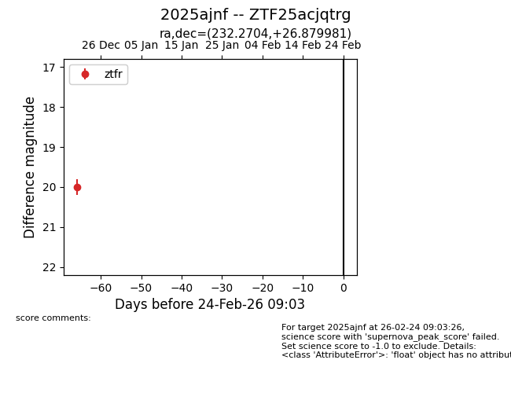
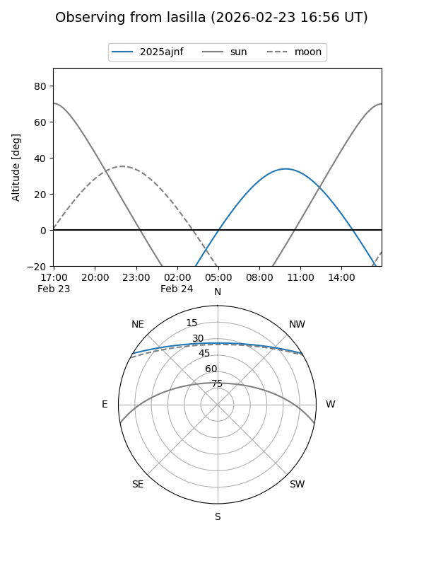
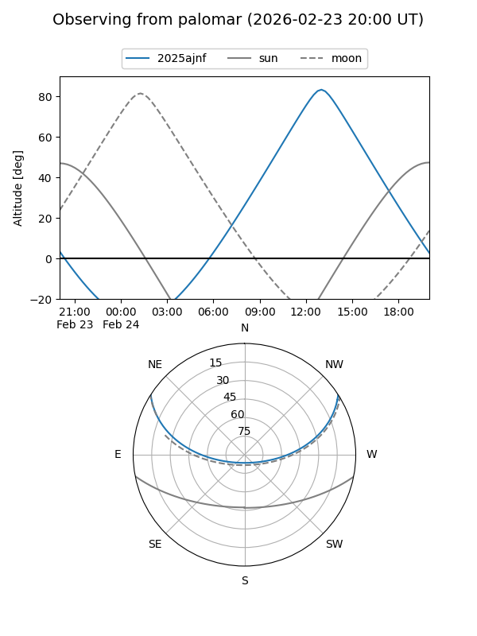

2025ajnf
Target 2025ajnf at 2025-12-31 18:01
Aliases and brokers:
FINK: link
Lasair: link
ALeRCE: link
TNS: link
YSE: link
alt names
ZTF25acjqtrg (ztf,fink_ztf)
2025ajnf (tns,yse)
Coordinates:
equatorial (ra, dec) = 232.2704,+26.87998
equatorial (HMS+DMS) = 15:29:04.89,+26:52:47.93
galactic (l, b) = (41.7797,+55.03315)
Flags:
Photometry:
last ztfr=20.00
1 ztfr detections
Lightcurve

Visibility


Additional plots